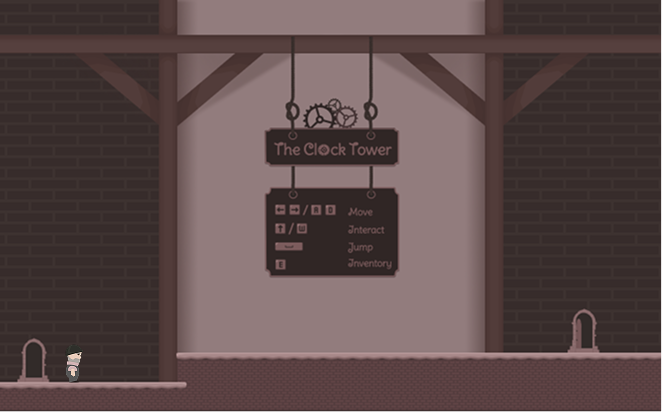
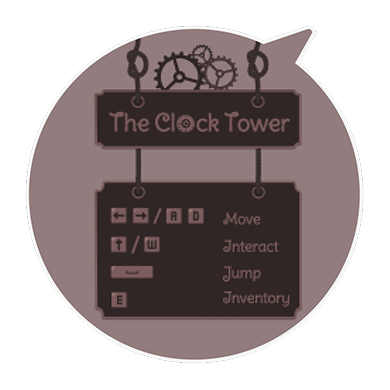
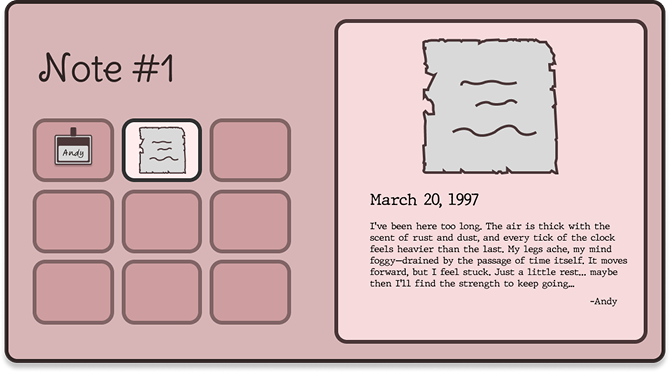

Team Project of 4
The objective of The Last Cog is to create a narrative-driven gameplay experience that combines environmental storytelling with platforming and puzzle-solving mechanics. Through the player's journey up the clocktower, the project aims to gradually uncover the mystery behind the missing chime while encouraging exploration and problem-solving. By integrating traversal challenges and interactive puzzles, the game seeks to immerse players in a suspenseful atmosphere where each discovered item contributes to revealing the story of the silent town.
The Last Cog is a narrative-driven game set in a town silenced by the sudden absence of its clocktower chime, leaving residents with an unsettling sense of void. In response to this mysterious event, local officials enlist Kit Walker, a trusted repairer, to restore the clocktower. The player controls Kit as they navigate dynamic platforming challenges and lever-based puzzles, ascending the tower to gather items that gradually reveal the haunting mystery behind the missing chime.
I contributed to the early narrative ideation of The Last Cog, helping shape the central mystery surrounding the silent clocktower and the unsettling atmosphere experienced by the town's residents.
Our goal was to create a story that unfolds gradually through the player's ascent of the tower. I participated in discussions on how the narrative could be revealed through environmental cues, item discoveries, and cutscene moments, ensuring that the mystery develops naturally alongside gameplay progression.
By structuring the story around the player's journey upward, the narrative becomes closely tied to the gameplay loop, each puzzle solved and each level climbed brings players closer to understanding what happened to the clocktower's missing chime.
I illustrated the game's narrative cutscenes and several small in-game storytelling elements that players encounter while progressing through the tower. These visual pieces were designed to support the game's mysterious atmosphere and gradually reveal parts of the story as players move closer to the top of the clocktower.
The cutscenes were created to communicate emotion, tension, and narrative progression without relying heavily on dialogue. Through composition, lighting, and muted color palettes, the illustrations emphasize the unsettling tone of the silent town and the mystery behind the missing chime.
In addition to the cutscenes, I also designed and illustrated collectible narrative objects that players discover while climbing the tower. These small visual elements act as fragments of storytelling, providing hints and contextual details about the events surrounding the clocktower. By placing these objects along the player's journey, the narrative unfolds gradually through exploration rather than direct exposition.
Following the project's visual style, I ensured that these narrative assets remained consistent with the overall art direction of the game. This helped maintain a cohesive atmosphere where both cinematic moments and interactive elements contribute to the same mysterious tone.
I designed and implemented the in-game UI system with the goal of maintaining immersion while providing players with clear access to information and controls. Instead of presenting menus as separate screens that interrupt gameplay, the interface was designed to feel like a natural extension of the game environment.
A key contribution was integrating the shell menu (controller interface) directly into the gameplay flow. Players can access interface elements without leaving the game scene, allowing interactions to remain seamless and preserving the pacing of exploration and puzzle-solving within the clocktower.
In addition, I designed the collectible review interface, which allows players to revisit narrative objects they have discovered throughout the game. The interface uses a box-style layout, where collected items appear on the left in a grid, and selecting an item reveals its associated narrative entry on the right. This layout allows players to easily browse collected objects while clearly connecting each item with its story context.



The UI was intentionally kept minimal and structured, ensuring that gameplay elements such as platforming and puzzles remain visually dominant while the interface provides necessary feedback and narrative information. Through this design, the UI system supports both usability and storytelling, allowing players to revisit narrative fragments and better understand the mystery surrounding the silent clocktower.
Working on The Last Cog allowed me to contribute across narrative ideation, visual storytelling, and UI design. This experience helped me understand how story, art, and interface systems must align to create a cohesive gameplay experience.
I learned how storytelling can emerge through interaction. By combining collectible objects, environmental cues, and cutscenes, the narrative unfolds naturally as players progress through the tower.
Designing the UI reinforced the importance of interfaces that support gameplay rather than interrupt it. Integrating the shell menu and collectible review interface helped maintain immersion while keeping information clear and accessible.
This project emphasized iterative collaboration, where ideas across narrative, visuals, and UI were refined through team discussions, feedback, and testing to keep the overall experience aligned.